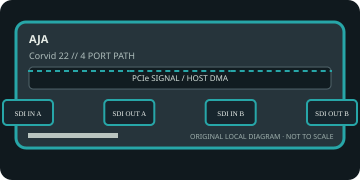

[ INDIVIDUAL COMPONENT // EXPANSION CARDS ]
AJA Corvid 22
Two-channel 3G-SDI OEM capture/playback interface with RS-422 control and reference sync. This static reference distinguishes documented card I/O from host software, codecs, and external signal paths.

IDENTIFICATION: Match the exact SKU, model marking, part number, board revision, bracket and connector layout to manufacturer documentation. Similar family names do not imply interchangeable ports, firmware or support.
Capture, playback and compatibility specifications
| Exact model / SKU | Corvid 22 — verify the marking and revision on the physical card. |
|---|---|
| PCI/PCIe bus and lanes | PCI Express x4 interface; install in a slot wired for at least four lanes and confirm the board and host generation negotiate correctly. |
| Digital video inputs | Four 3G-SDI BNC connectors provide two SDI inputs and two SDI outputs; 16-channel embedded audio at 24-bit/48 kHz is carried per active SDI path. Separate LTC and RS-422 connections are available for workflow control. |
| Analog ports | No analog picture input/output. Analog color-black or HD tri-level reference is supported for synchronization only. |
| Input formats | SD, HD and 2K signals, including supported 3G-SDI frame rates through 1080p60 and 2048×1080 formats. 8/10-bit YCbCr and RGB framebuffer modes depend on SDK/application configuration. |
| Output formats and connectors | Two independent 3G-SDI outputs can play supported SD/HD/2K signals; the other two SDI ports are capture inputs. No HDMI or analog picture output. |
| Encoding and driver model | AJA card/SDK transfers video frames; no onboard media-file codec is specified. Any ProRes, DNx, H.264 or other recording format is handled by the application/host. |
| Operating-system compatibility | AJA SDK/Desktop Software and a compatible OEM or broadcast application are required. Windows and Linux support varies with SDK/driver generation; check current AJA downloads and legacy product support before choosing an OS. |
| Software | AJA Control Panel/SDK and supported third-party or custom broadcast applications; software channel configuration controls input/output direction and timing. |
| Power and cooling | AJA specifications list approximately 12 W typical and 15 W maximum for the Corvid 22. Keep the card within slot, chassis airflow and ambient-temperature limits; verify revision-specific power details. |
| Firmware caveat | Firmware/driver compatibility is release-specific and controlled through AJA software/SDK workflows. Match the SDK and board revision; do not force a firmware load intended for a different Corvid model. |
Integration notes and limitations
- Both channels share host PCIe and memory bandwidth. Check reference format, SDI level, audio mapping, SDK release and source timing; external BNC reference is not a capture input.
- Verify physical slot fit, PCIe lane wiring, BIOS/UEFI enumeration, host bandwidth and driver support together; a longer slot does not guarantee the electrical width the card needs.
- Record the board revision, firmware/driver versions, OS build, application, signal standard, source timing and tested pixel format as part of commissioning.
- Distinguish a video transport/pixel format from a compressed file codec. Unless the manufacturer explicitly states hardware encoding, codec creation and recording are host-application tasks.
Manufacturer sources and support
- AJA — Corvid 22 product information and technical specificationsManufacturer source; consult the exact model/revision and software-release notes before installation.
- AJA — Corvid 22 manufacturer specification sheetManufacturer source; consult the exact model/revision and software-release notes before installation.
Product revisions, driver support and application integrations change over time; manufacturer documentation for the exact card takes precedence over generic family-level guidance.